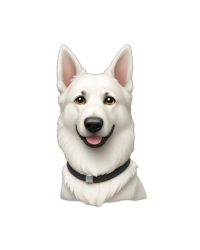

A
b
o
u
t
M
e
My passion for technology began at a young age, starting with the Nintendo 64. I spent countless hours immersed in the vibrant world of Nintendo, which sparked my interest in computing. This early fascination evolved into a deep engagement with various aspects of technology. As a child, I created online radio stations, developed retro-style Habbo Hotels, and honed my skills in photo and video editing.
As I matured, my dedication to technology remained steadfast, even as I balanced other interests and responsibilities. Over the past 11 years, I have built a career in the tech industry, gaining experience in both the retail and corporate sectors, from selling technology products to procuring them for large corporations.
In early 2024, I decided to focus my efforts on front-end development, allowing me to indulge my passion for learning and creating with technology. This career shift has been immensely fulfilling, providing me with the opportunity to blend my professional skills with my personal interests.
Outside of work, I enjoy spending quality time with my family and taking my two German Shepherds, Willow and Kyla, on long walks. This balance between my professional and personal life keeps me grounded and inspired.
